DAY 1 · 11/14（六）
3 個舞台火舞台
滅火器 Fire EX.
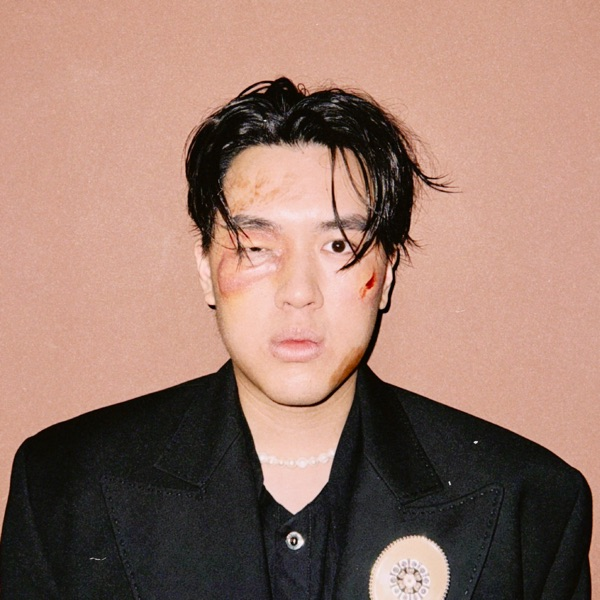
Gummy B

血肉果汁機 Flesh Juicer ft. Tatsuya Amano (Crossfaith)
蛋堡
鄭宜農 Enno Cheng
FEVER 333
美國
球舞台

淺堤 Shallow Levée ft. 鄭宜農 Enno Cheng
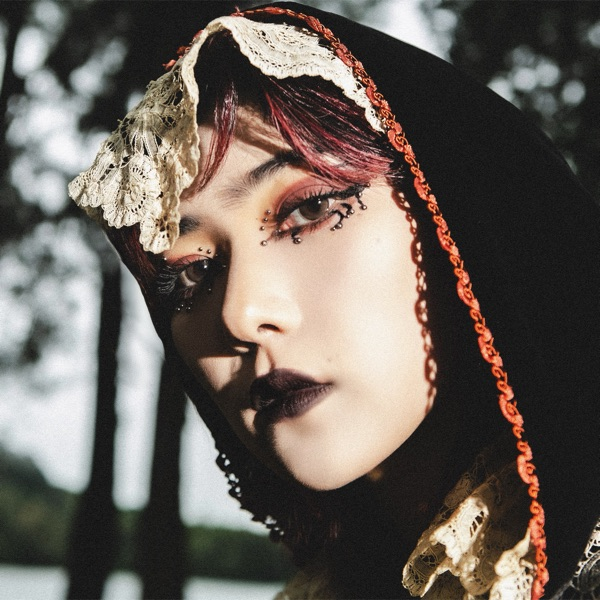
Isyana Sarasvati
印尼
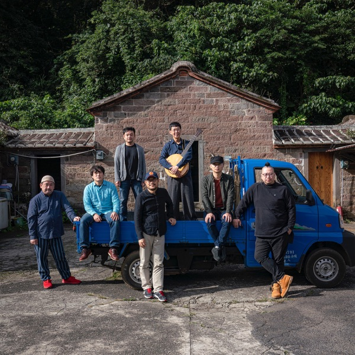
生祥樂隊
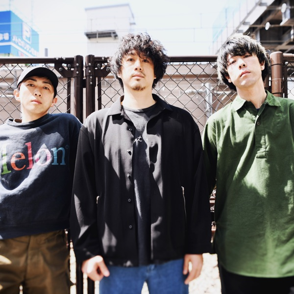
Northern19
日本
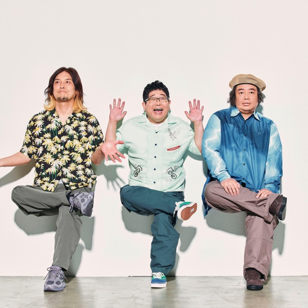
Sambomaster
日本
祭舞台
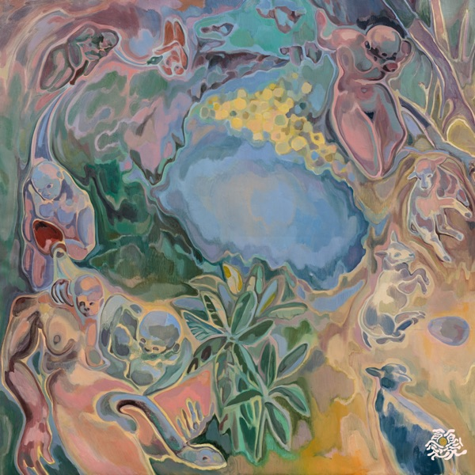
憂憂 Yō-Yō
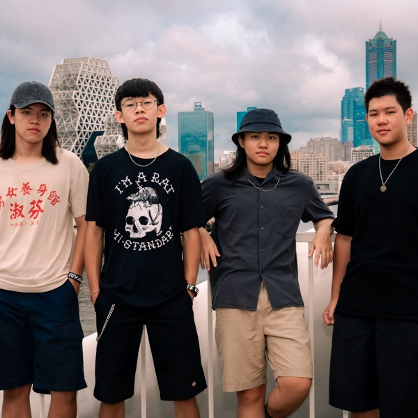
BUTTER RIOT
葛西瓦 Kasiwa
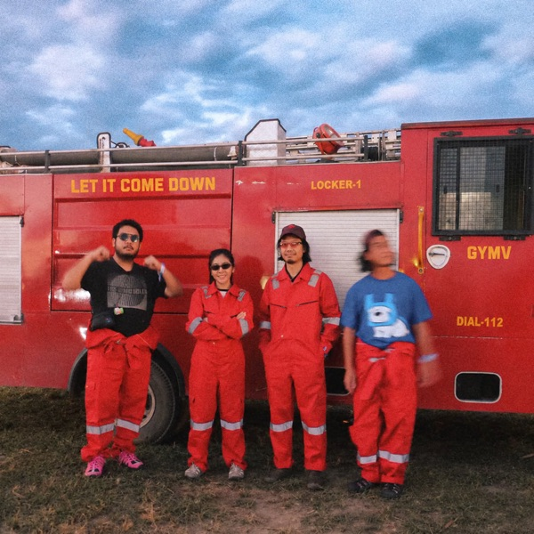
GYMV
泰國
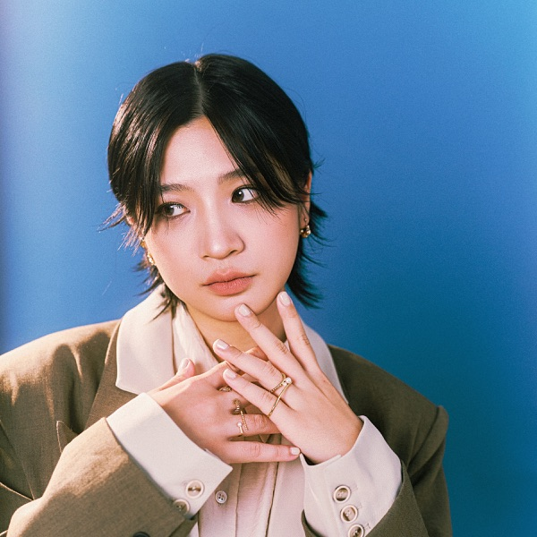
黃宇寒 Han
PiA吳蓓雅 ft. 邱淑蟬
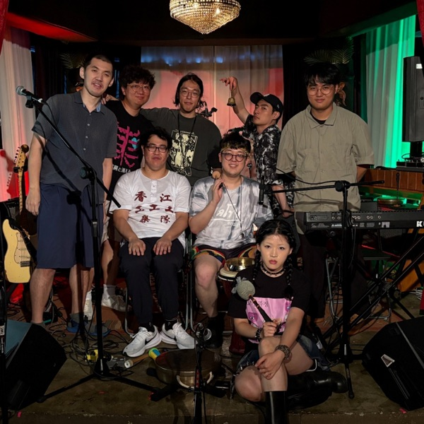
Ureuk and The Gypsies
韓國
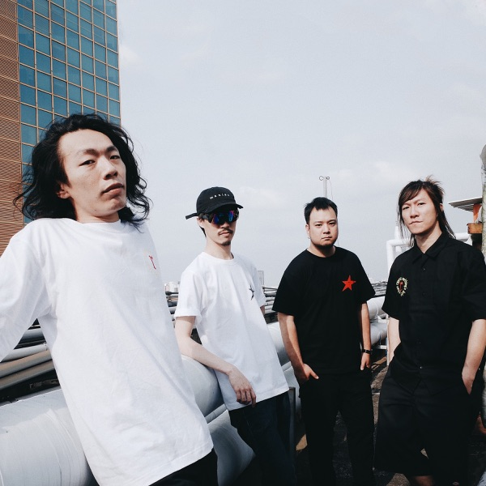
隨性 Random
DAY 2 · 11/15（日）
4 個舞台火舞台
EmptyORio ft. Yappy
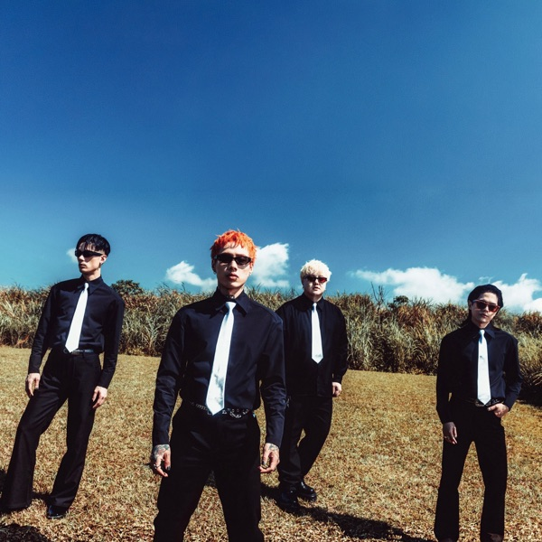
TRASH
洪佩瑜 Pei-Yu Hung ft. 陳嫺靜 HSIEN CHING
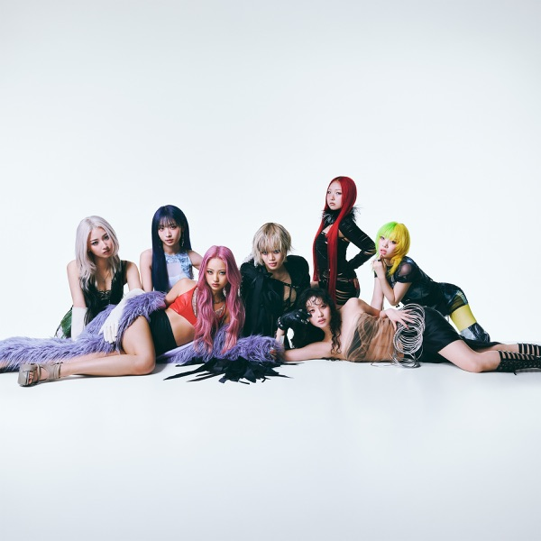
HANA
日本
Dragon Ash
日本
球舞台
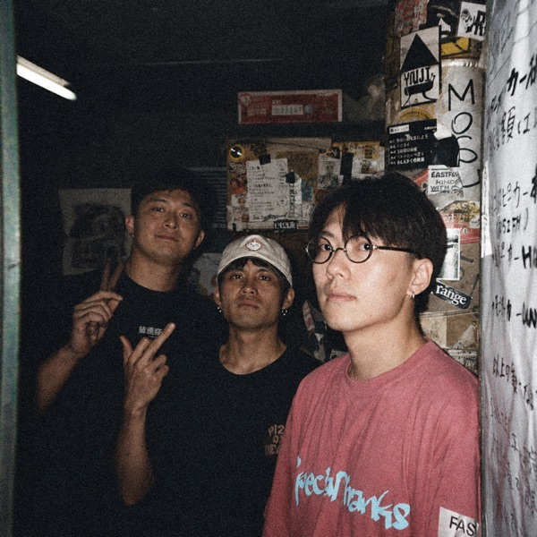
普通隊長 Captain Ordinary
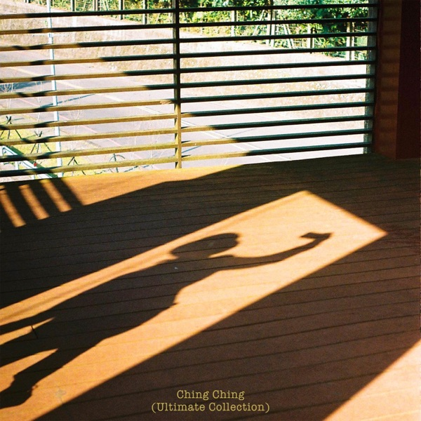
陳嫺靜 HSIEN CHING
Crystal Lake ft. GIGO
日本
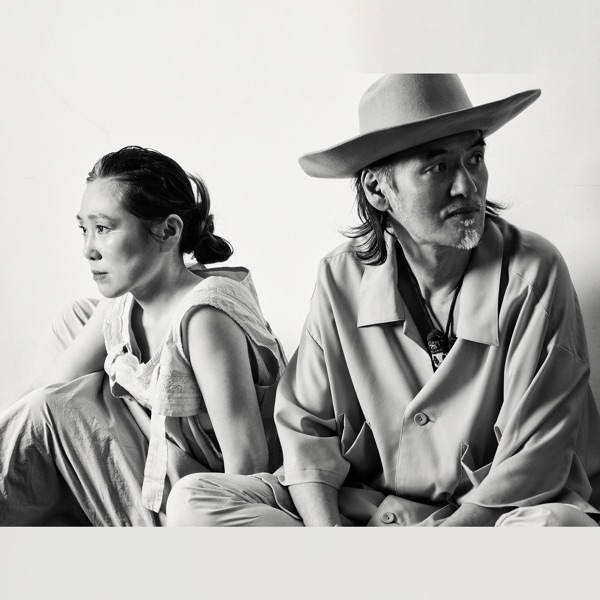
EGO-WRAPPIN'
日本
美秀集團
滅火器 Fire EX.
祭舞台
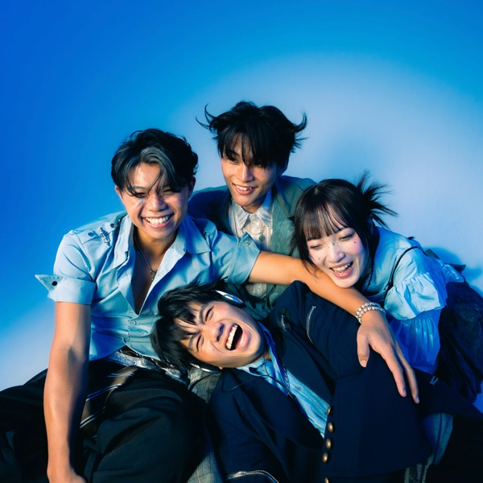
公館青少年 GGteens
C.Holly
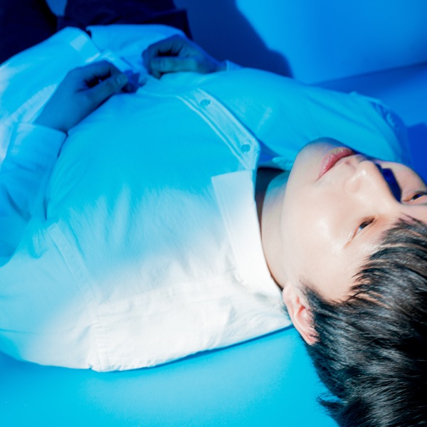
陳以恆
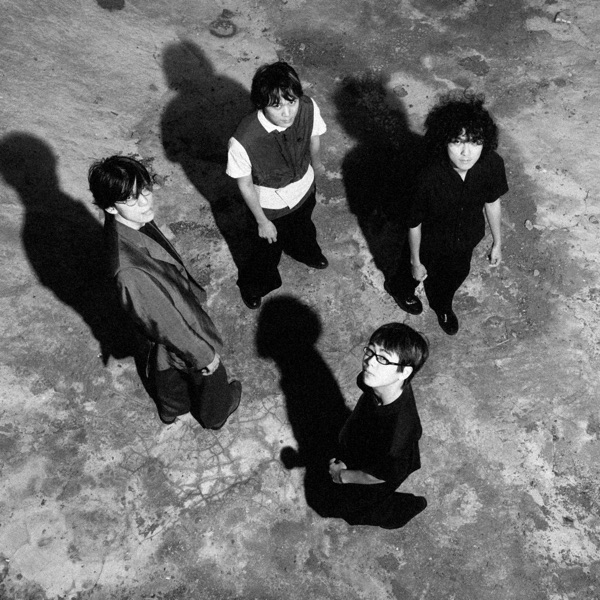
debloop
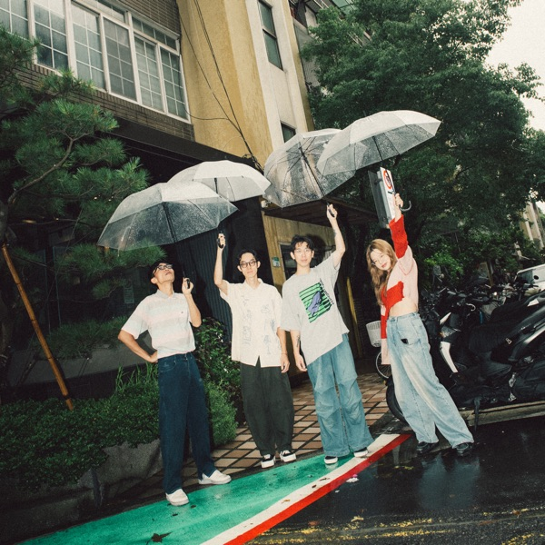
DSPS
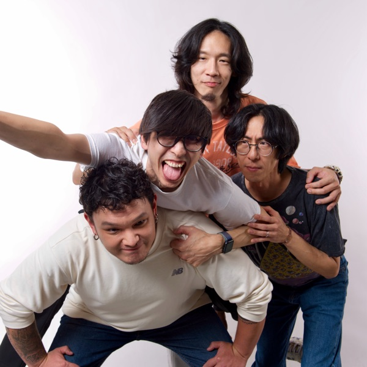
擊沈女孩 DESTROYERS
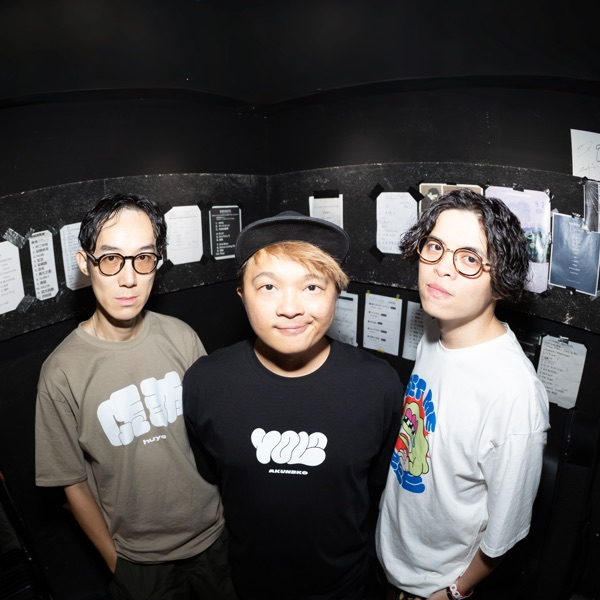
胖虎
固定客 GOODICK
火球村
黃子軒
王鍾惟
王鍾錡
找不到符合的作品，換個關鍵字試試。